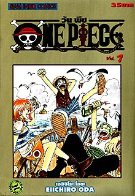

ช่วงหลังจากจบมหาสงคราม หรือ สงครามมารีนฟอร์ด ตอนที่กลุ่มหมวกฟางหายตัวไป\

หลังจากจบมหาสงครามไปไม่นานเกิด พวกยุคสมัยที่เลวร้ายที่สุด 9 กลุ่ม(ยกเว้นพวกหมวกฟาง)เข้าโลกใหม่จนปั่นป่วน เกิดศึกชิงอำนาจที่ไร้หนวดขาว โดยหนวดดำนำหน้า 1 ก้าว จัดการบอนนี่ง่ายๆ กับไปยึดอาณาเขตของหนวดขาวมาเป็นของตนจนหมด กับไล่ล่าผู้มีพลังพิเศษเพื่อชิงพลังมากับสร้างกองทัพ ส่วนพวกที่หลงไปอาณาเขตบิ๊กมัมคือ คิด อาพู แพ้ขุนพลสวีตจนบาดเจ็บจึงถูกพาตัวออกจากอาณาเขต มีแต่เบจจ์ที่ยอมเข้าร่วม ส่วนอูรูจจัดการสแนค(1 ใน 4 ขุนพลรสวีต)กับหนีออกได้ เพราะแพ้แครกเกอร์จนสาหัส ทางเดรคไปอาณาเขตของไคโดสู้กับผู้คุมเกาะจนไคโดมาแล้วสู้กันผลคือเดรคยอมเข้าร่วมกับไคโด ส่วนโฮคินส์ไม่ทราบ กองทัพเรือมีการหาจอมพลคนใหม่ จอมพลเรือเซนโงคุเสนอพลเรือเอกอาโอคิยิ(คุซัน) แต่รัฐบาลโลกสนับสนุนพลเรือเอกอาคาอินุ(ซากาสุกิ) ทั้ง 2 ความเห็นไม่ตรงกัน จึงเกิดศึกสู้ตัดสินกันหาผู้ชนะคือจอมพลเรือคนใหม่ที่เกาะพังค์ฮาซาร์ด 10 วัน ทั้ง 2 สาหัสปางตาย ผลคือซากาสุกิชนะคือพลเรือเอกคนใหม่ ทางคุซันขอลาออก กองทัพเรือเปลี่ยนแปลงคือเป็นรูปแบบเผด็จการ กับมีการเกณฑ์ทหารเรือจากทั่วโลก จนได้ทหารที่มีคุณภาพเพิ่มขึ้น โดย 2 พลเรือเอกใหม่ที่เข้ามาได้แก่ ฟูจิโทระ(อิชโช)กับเรียวคุเกียว(อารามากิ)ทางรัฐบาลโลกเฟ้นหา 7 เทพโจรสลัดคนใหม่แทน 3 ตำแหน่งที่ว่างจนครบคือบากี้ จากประวัติถูกแฉ กับลอว์ที่นำหัวใจโจรสลัด 100 ดวงมาต่อรอง โดย 1 ปีผ่านไป วีเบิ้ลชายผู้อ้างคือลูกชายแท้ๆ ของหนวดขาวจนครบ ทางมัลโก้ได้นำทัพหนวดขาวไปล้างแค้นกับพวกหนวดดำ จึงเกิดสงครามขึ้นผลคือหนวดดำชนะถูกยอมรับจากทั่วโลกคือ 1 ใน 4 จักรพรรดิคนใหม่